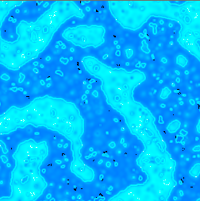
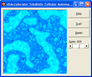
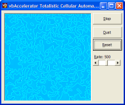
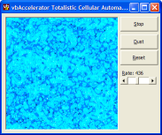
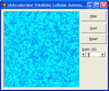
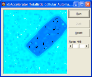

23 Oct 2003
23 Oct 2003
First Posted

Totalistic Cellular Automata
Create unique, continually varying tiled images
Continuing this short series on the use of cellular automata for creation of algorithmic images, this sample demonstrates using the Totalistic form. A Totalistic cellular automata differs from other the other forms of the algorithm by summing the contribution from surrounding cells, and using modular arithmetic to provide the result.
About The Totalistic Cellular Automata Algorithm
As described in the article Crystal Model Cellular Automata article, a cellular automata is essentially a grid of cells whose state varies with each step through the automation. In this case, the rule that is applied to modify the state between steps is as follows:
- Average the state of each of the nine neighbouring cells by summing them and then dividing by 9.
- Add a rate constant between 0 and 1 to the result.
- Discard the whole portion of the result, and then multiply by the total number of states.
As ever, this technique sounds rather simple and it is hard to imagine it producing particularly complex results. And in practice, if you start with a grid where all of the cells have the same state then that is true. However, if the initial state is seeded with random values then complex and organised results emerge rapidly. This is associated with the "magic" step of discarding the whole portion of the result, which introduces considerable complexity into the mathematics.
One of the effects of taking only the fractional portion of the result is that if the rate factor is around 0.5 then many cells will undergo a radical change in state with each step of the automata. This differs from the more natural evolution of states which occur in the Catalytic and Crystal model automatas presented elsewhere in the article, and can result in flashing, depending upon how the colours in the palette are arranged. The technique can therefore be better suited for creation of static environments rather than evolving or animated ones.
Implementation
As with the other cellular automata samples, the implementation uses a 256 Colour DIB Section to store the result. This is used both for manipulating the state and rendering at the same time, which means animation can be performed in realtime on many systems.
The main part of the implementation makes the DIB Section memory look like a VB array, then loops through each cell, performing the algorithm given above. The code for this is as follows:
Public Sub Step()
Dim x As Long
Dim y As Long
Dim tSALast As SAFEARRAY2D
Dim tSA As SAFEARRAY2D
Dim bDibLast() As Byte
Dim bDibNext() As Byte
Dim lTot As Long
Dim iX As Long
Dim iY As Long
Dim i As Long
Dim j As Long
Dim lMid As Long
With tSALast
.cbElements = 1
.cDims = 2
.Bounds(0).lLbound = 0
.Bounds(0).cElements = m_cDibLast.Height
.Bounds(1).lLbound = 0
.Bounds(1).cElements = m_cDibLast.BytesPerScanLine()
.pvData = m_cDibLast.DIBSectionBitsPtr
End With
CopyMemory ByVal VarPtrArray(bDibLast()), VarPtr(tSALast), 4
With tSA
.cbElements = 1
.cDims = 2
.Bounds(0).lLbound = 0
.Bounds(0).cElements = m_cDib.Height
.Bounds(1).lLbound = 0
.Bounds(1).cElements = m_cDib.BytesPerScanLine()
.pvData = m_cDib.DIBSectionBitsPtr
End With
CopyMemory ByVal VarPtrArray(bDibNext()), VarPtr(tSA), 4
' Run the cellular automata step:
lMid = m_lStates \ 2
For x = 0 To m_cDib.Width - 1
For y = 0 To m_cDib.Height - 1
lTot = 0
Dim fTot As Double
For iX = -1 To 1
i = x + iX
If (i < 0) Then i = m_cDib.Width - 1
If (i >= m_cDib.Width) Then i = 0
For iY = -1 To 1
j = y + iY
If (j < 0) Then j = m_cDib.Height - 1
If (j >= m_cDib.Height) Then j = 0
fTot = fTot + bDibLast(i, j)
Next iY
Next iX
fTot = fTot / (9# * m_lStates)
fTot = fTot + m_fRate
fTot = fTot - Int(fTot)
bDibNext(i, j) = fTot * m_lStates
Next y
Next x
' Copy New -> Old
m_cDib.PaintPicture m_cDibLast.hdc
' Clear the temporary array descriptor
CopyMemory ByVal VarPtrArray(bDibNext), 0&, 4
CopyMemory ByVal VarPtrArray(bDibLast), 0&, 4
End Sub
To make the output look interesting, each of the states is assigned a colour from a gradient palette. The palette is arranged so that there is a linear gradient from a dark colour to a light colour and back again over the 256 states:
Public Property Let States(ByVal lStates As Long)
m_lStates = lStates
ReDim lColor(0 To m_lStates - 1) As Long
Dim i As Long, j As Long
Dim rS As Long, gS As Long, bS As Long
Dim rE As Long, gE As Long, bE As Long
' Get the RGB components of the dark and light colours:
rS = m_lColorDark And &HFF&
gS = (m_lColorDark And &HFF00&) \ &H100&
bS = (m_lColorDark And &HFF0000) \ &H10000
rE = m_lColorLight And &HFF&
gE = (m_lColorLight And &HFF00&) \ &H100&
bE = (m_lColorLight And &HFF0000) \ &H10000
' Generate the palette:
Dim lMid As Long
lMid = States \ 2
For i = 0 To lMid
lColor(i) = RGB( _
rS + (i * (rE - rS)) \ lMid, _
gS + (i * (gE - gS)) \ lMid, _
bS + (i * (bE - bS)) \ lMid _
)
Next i
j = i
For i = lMid + 1 To m_lStates - 1
lColor(i) = lColor(j)
j = j - 1
Next i
' Set this palette into the DIB Sections:
m_cDib.SetPalette lColor
m_cDibLast.SetPalette lColor
End Property
Sample Output
Some images which were generated using this technique are displayed below. These effects were generated by varying the rate factor:



Conclusion
This article has demonstrated how to implement a simple Totalistic Cellular Automata and provided sample code to play with.